Last updated: 2017-03-02
Code version: d6af08f
cell types: K562 GM12878 HUVEC NHLF data dimension [1] 18000 1053.1 % zeros in the matrixFit GoM after removing 452 empty rows
Estimating on a 17548 document collection.
Fitting the 2 topic model.
log posterior increase: 16392.4, done.
topic
phrase 1 2
CTCF 0.18 0.02
H3K27me3 0.22 0.00
H3K36me3 0.15 0.02
H4K20me1 0.15 0.01
H3K4me1 0.03 0.23
H3K4me2 0.01 0.18
H3K4me3 0.09 0.15
H3K27ac 0.00 0.22
H3K9ac 0.03 0.13
Control 0.14 0.02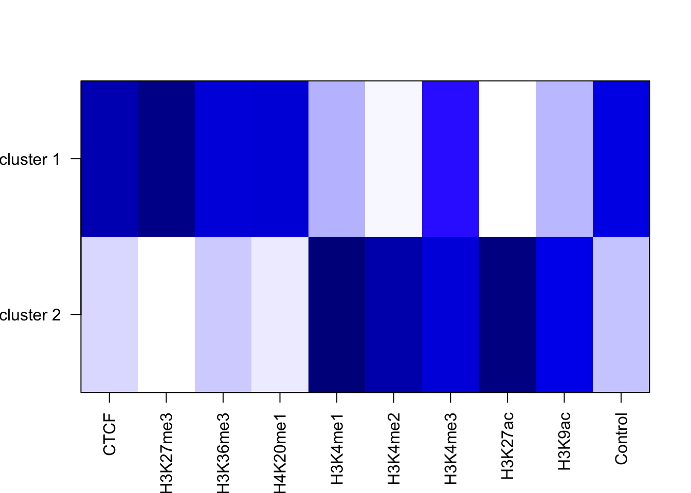
Fill 452 empty rows
structure plot 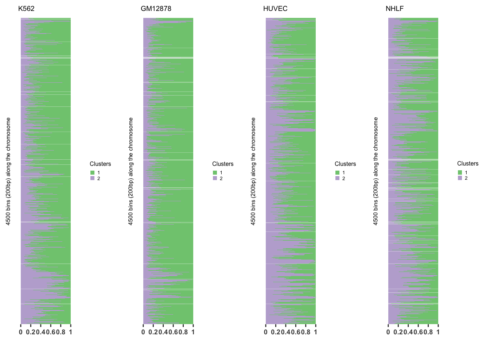
Fit GoM after removing 452 empty rows
Estimating on a 17548 document collection.
Fitting the 3 topic model.
log posterior increase: 19709.7, done.
topic
phrase 1 2 3
CTCF 0.01 0.00 0.33
H3K27me3 0.32 0.00 0.01
H3K36me3 0.19 0.02 0.05
H4K20me1 0.22 0.01 0.01
H3K4me1 0.02 0.31 0.01
H3K4me2 0.00 0.23 0.02
H3K4me3 0.02 0.04 0.39
H3K27ac 0.00 0.28 0.01
H3K9ac 0.01 0.10 0.16
Control 0.22 0.02 0.01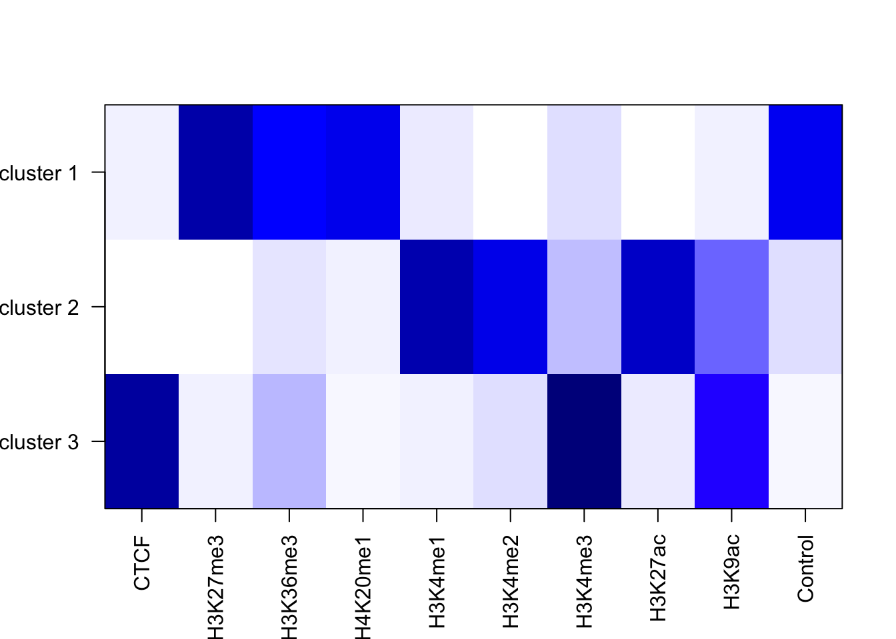
Fill 452 empty rows
structure plot 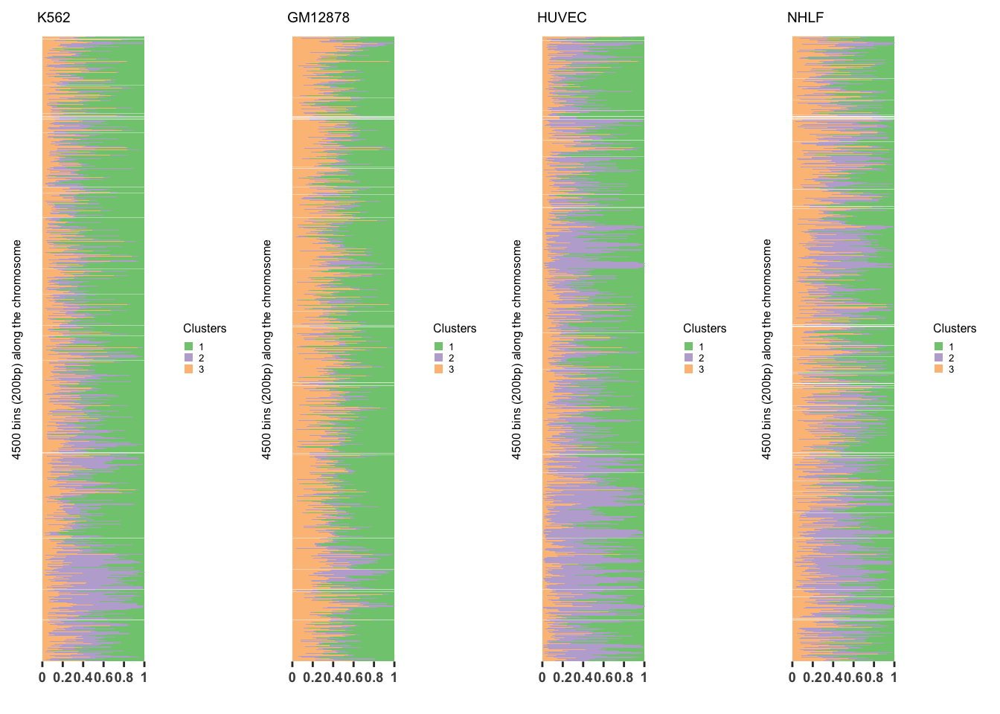
Fit GoM after removing 452 empty rows
Estimating on a 17548 document collection.
Fitting the 4 topic model.
log posterior increase: 22759.3, done.
topic
phrase 1 2 3 4
CTCF 0.00 0.00 0.00 0.78
H3K27me3 0.38 0.00 0.00 0.04
H3K36me3 0.08 0.01 0.19 0.05
H4K20me1 0.26 0.01 0.01 0.02
H3K4me1 0.01 0.35 0.00 0.03
H3K4me2 0.00 0.24 0.05 0.00
H3K4me3 0.01 0.02 0.44 0.04
H3K27ac 0.00 0.29 0.06 0.00
H3K9ac 0.00 0.07 0.25 0.01
Control 0.25 0.02 0.01 0.03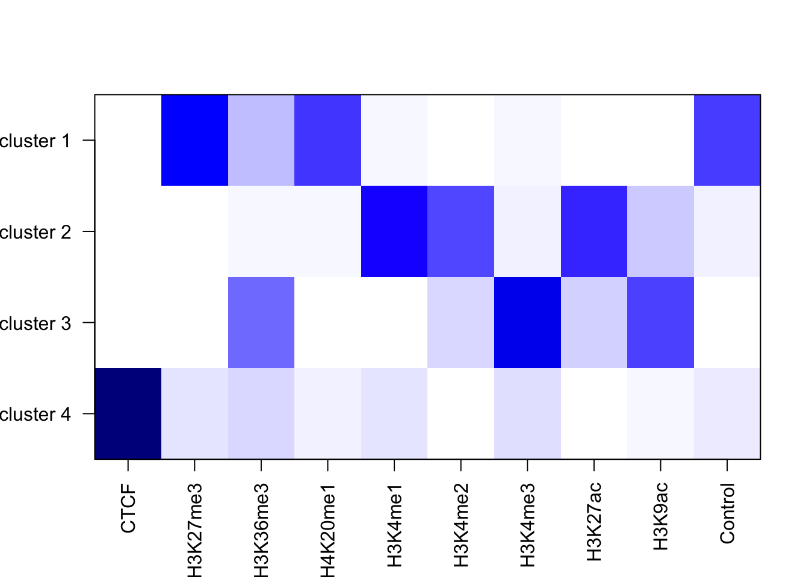
Fill 452 empty rows
structure plot 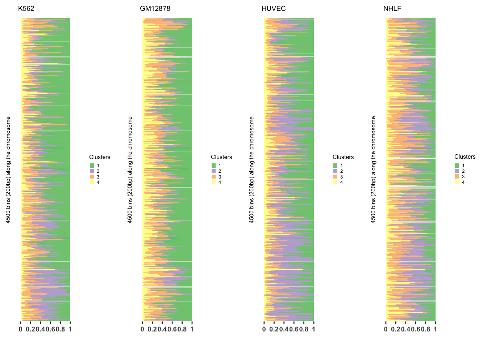
Fit GoM after removing 452 empty rows
Estimating on a 17548 document collection.
Fitting the 5 topic model.
log posterior increase: 20147, 290.3, done.
topic
phrase 1 2 3 4 5
CTCF 0.00 0.00 0.00 0.00 0.89
H3K27me3 0.47 0.00 0.00 0.00 0.02
H3K36me3 0.00 0.00 0.00 0.66 0.00
H4K20me1 0.26 0.01 0.00 0.12 0.01
H3K4me1 0.00 0.39 0.00 0.05 0.01
H3K4me2 0.00 0.24 0.10 0.00 0.00
H3K4me3 0.01 0.00 0.49 0.02 0.04
H3K27ac 0.00 0.29 0.11 0.00 0.00
H3K9ac 0.00 0.04 0.30 0.01 0.00
Control 0.25 0.02 0.00 0.13 0.02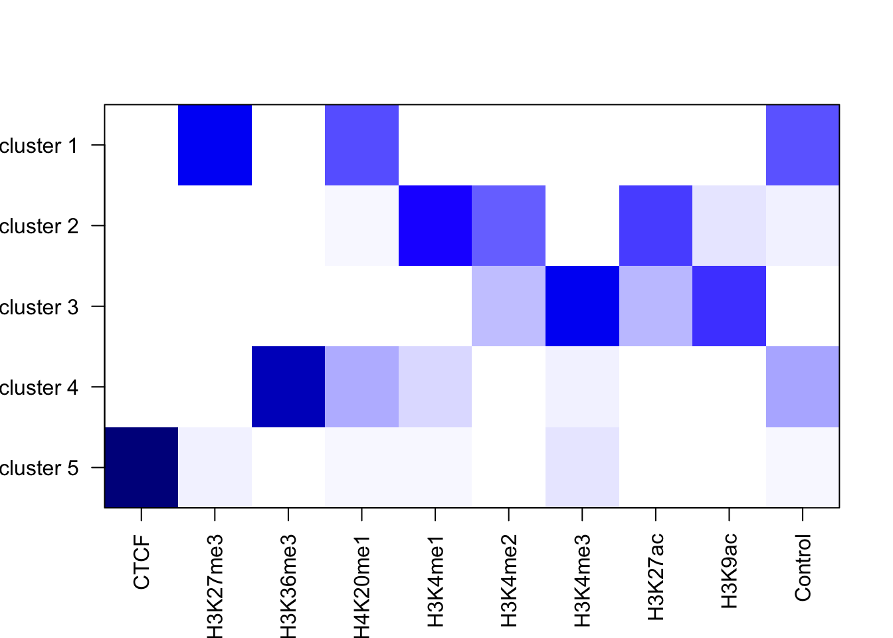
Fill 452 empty rows
structure plot 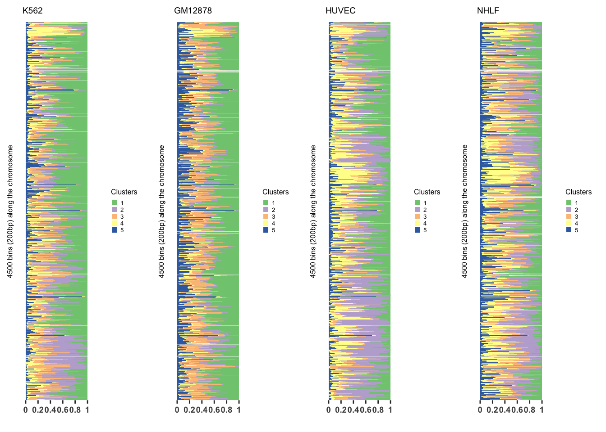
Fit GoM after removing 452 empty rows
Estimating on a 17548 document collection.
Fitting the 6 topic model.
log posterior increase: 17296.4, 574.9, done.
topic
phrase 1 2 3 4 5 6
CTCF 0.00 0.00 0.00 0.00 0.00 0.94
H3K27me3 0.67 0.00 0.00 0.00 0.00 0.01
H3K36me3 0.00 0.00 0.00 0.72 0.00 0.00
H4K20me1 0.32 0.01 0.00 0.20 0.01 0.01
H3K4me1 0.00 0.39 0.00 0.05 0.05 0.01
H3K4me2 0.00 0.25 0.10 0.00 0.00 0.00
H3K4me3 0.00 0.00 0.51 0.01 0.01 0.03
H3K27ac 0.00 0.30 0.10 0.00 0.00 0.00
H3K9ac 0.00 0.05 0.28 0.01 0.07 0.00
Control 0.00 0.00 0.00 0.00 0.85 0.00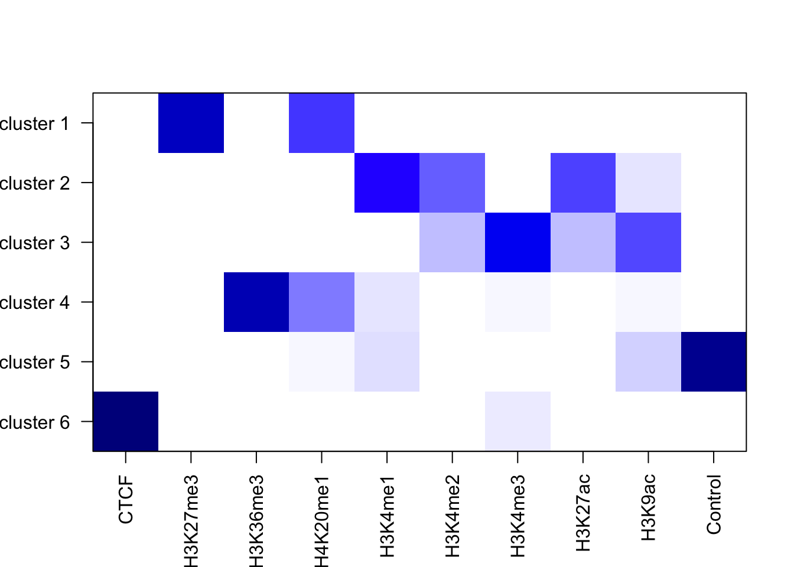
Fill 452 empty rows
structure plot 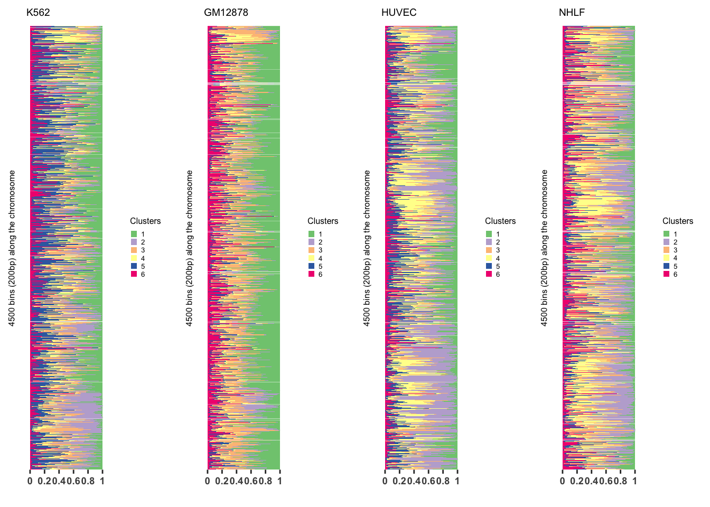
Fit GoM after removing 452 empty rows
Estimating on a 17548 document collection.
Fitting the 7 topic model.
log posterior increase: 18079.9, 464.2, 332.9, done.
topic
phrase 1 2 3 4 5 6 7
CTCF 0.00 0.00 0.00 0.00 0.00 0.00 1
H3K27me3 0.61 0.00 0.00 0.02 0.00 0.00 0
H3K36me3 0.00 0.00 0.00 0.00 0.00 0.90 0
H4K20me1 0.39 0.01 0.01 0.00 0.00 0.09 0
H3K4me1 0.00 0.59 0.00 0.00 0.00 0.01 0
H3K4me2 0.00 0.28 0.17 0.00 0.00 0.00 0
H3K4me3 0.00 0.00 0.04 0.98 0.00 0.00 0
H3K27ac 0.00 0.12 0.42 0.00 0.00 0.00 0
H3K9ac 0.00 0.00 0.37 0.00 0.05 0.00 0
Control 0.00 0.00 0.00 0.00 0.94 0.00 0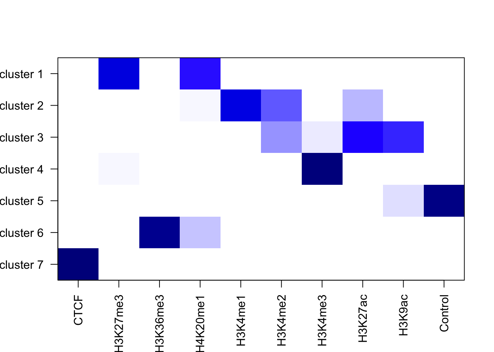
Fill 452 empty rows
structure plot 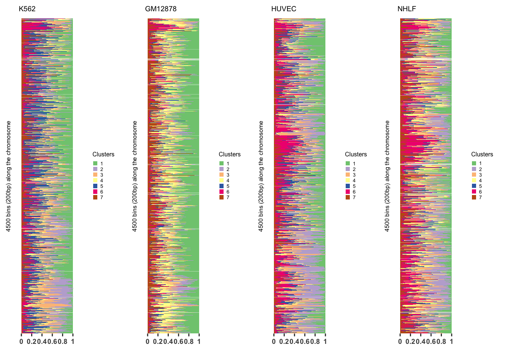
sessionInfo()R version 3.3.2 (2016-10-31)
Platform: x86_64-apple-darwin13.4.0 (64-bit)
Running under: OS X Yosemite 10.10.5
locale:
[1] en_US.UTF-8/en_US.UTF-8/en_US.UTF-8/C/en_US.UTF-8/en_US.UTF-8
attached base packages:
[1] grid stats graphics grDevices utils datasets methods base
other attached packages:
[1] gridExtra_2.2.1 maptpx_1.9-2 slam_0.1-40 CountClust_0.1.2 ggplot2_2.2.1 gplots_3.0.1 workflowr_0.3.0 rmarkdown_1.3
loaded via a namespace (and not attached):
[1] Rcpp_0.12.9 RColorBrewer_1.1-2 git2r_0.18.0 plyr_1.8.4 bitops_1.0-6 tools_3.3.2 digest_0.6.12
[8] nlme_3.1-130 evaluate_0.10 tibble_1.2 gtable_0.2.0 lattice_0.20-34 mgcv_1.8-16 Matrix_1.2-8
[15] rstudioapi_0.6 parallel_3.3.2 yaml_2.1.14 cluster_2.0.5 stringr_1.2.0 knitr_1.15.1 gtools_3.5.0
[22] caTools_1.17.1 stats4_3.3.2 rprojroot_1.2 nnet_7.3-12 cowplot_0.7.0 flexmix_2.3-13 gdata_2.17.0
[29] limma_3.28.21 reshape2_1.4.2 magrittr_1.5 MASS_7.3-45 backports_1.0.5 scales_0.4.1 htmltools_0.3.5
[36] modeltools_0.2-21 rsconnect_0.7 assertthat_0.1 permute_0.9-4 ape_4.0 picante_1.6-2 colorspace_1.3-2
[43] KernSmooth_2.23-15 stringi_1.1.2 lazyeval_0.2.0 munsell_0.4.3 vegan_2.4-2 This R Markdown site was created with workflowr